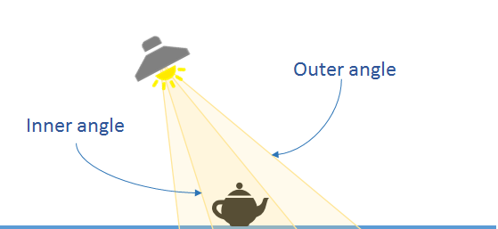
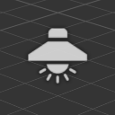
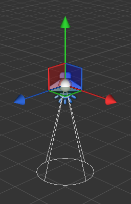
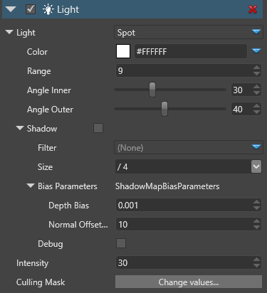

Spot lights
Warning
Приносим свои извинения за неудобства. Для этой страницы нет перевода на русский язык. Она будет отображаться на английском языке.
Beginner Designer Artist
Spot lights produce a cone of light in a specific direction. They're useful for simulating light from objects such as lampposts and flashlights. They cast shadows. You can control them with scripts or animation to create dramatic lighting effects.

The Scene Editor shows the position of the spot light with the following icon:

Once selected, the gizmo of the spot light displays its main direction, range and the outer cone:

Properties

| Property | Description |
|---|---|
| Color | The color of the light (RGB) |
| Range | The range in world units. Beyond the this range, the light doesn't affect models. |
| Angle Inner | The inner angle of the spot cone where the light intensity influence is at one |
| Angle Outer | The outer angle of the spot cone where the light intensity influence is zero |
| Shadows |
|
| Bias Parameters |
|
| Intensity | The intensity of the light. The color is multiplied by this value before being sent to the shader. Note: negative values produce darkness and have unpredictable effects |
| Culling Mask | Defines which entity groups are affected by this light. By default, all groups are affected |